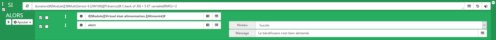

Paramètrage des scénarios
Notes préalables à la configuration des scénarios
1. Point important à retenir lors de l'écriture d'un scénario.
Scénario alimentation
2.
Déscription de l'algoritme du scénario alimentation :
RMCO = Repas Midi Capteur Ouverture.
Texte de description à rédiger.
L'écriture du scénario d'alimentation s'écrit comme suit :
Reset variable:

Déclencheur "RMO" :

Algorithme :

Vérification de l'état de la variable et changement de l'état si besoin.
Déclencheur "check":

Algorithme :

Scénario d'état (présence, sortie, repos et sommeil
3.
Déscription de l'algoritme du scénario d'état :
Texte de description à rédiger.
L'écriture du scénario d'état s'écrit comme suit :
Délcencheur :

Algorithme :

Scénario alertes mail
4.
Déscription de l'algoritme du scénario d'alertes mail :
Configuration du plugin :

Scénario alerte mail :